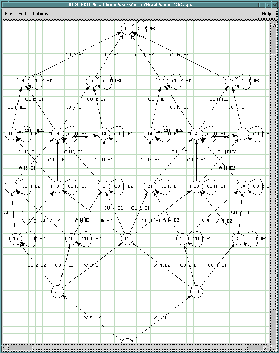

Table of Contents
bcg_edit - edit interactively the PostScript representation of BCG
graphs
bcg_edit [ -bg ] [ -fg ] filename1 filename2 ...
This
command provides a user-friendly, TCL-TK based, graphical editor, which allows
to modify interactively the representation of the Labelled Transition
Systems contained in files filename1, filename2, ... These files can be either:
- PostScript files generated by bcg_draw
or previously modified using
bcg_edit
. These files should have the .ps suffix.
- or BCG files, in
which case bcg_draw
will be invoked to generate a corresponding
PostScript file automatically. These files should have the .bcg suffix.
If
no filename is given on the command-line, the editor will be invoked nevertheless,
and file selection will be possible using the LOAD buttons of the FILE
menu.
The format of the PostScript files read and written by bcg_edit is
described in a technical report (see the files $CADP/doc/*/Tock-95.*).

The BCG_EDIT window
The
following options are supported:
- -bg
- (Background) Open all editor windows
simultaneously. The execution of bcg_edit will terminate immediately after
all editor windows are started. Default option.
- -fg
- (Foreground) Open all
editor windows sequentially. The execution of bcg_edit will only terminate
when the user quits the last editor window. Not a default option.
See the bcg
manual page for a description of the environment
variables used by all the BCG application tools. In addition, the following
environment variables are used by bcg_edit:
- $PRINTER
- If this variable is
set, its value determines the name of the PostScript printer to be used.
If this variable is unset, it is given the default value 'lp' according
to UNIX conventions.
- $CADP_PS_VIEWER
- If this variable is set, its value
determines the name of the PostScript viewer that will be invoked by bcg_edit
(the name of the viewer may be followed by options). Otherwise, bcg_draw
will search (in the list of directories defined by the $PATH variable plus
in a set of plausible default locations) for a viewer named 'ghostview' under
Unix and 'gsview32.exe' under Windows.
- $BCG_EDIT_SPLINE_STEPS
- If this variable
is set, its value determines the number of points used for spline curve
discretization (this value must be an even number). If this variable is
unset, it is given the default value '50'.
Exit status is 0 if
everything is alright, 1 otherwise.
Louis-Pascal Tock, Hubert Garavel
and Radu Mateescu.
- filename1
- BCG graph or PostScript file (input/output)
- filename2
- BCG graph or PostScript file (input/output)
- $CADP/com/bcg_edit
- bcg_edit shell script
- $CADP/tcl-tk/*
- TCL/TK programs and libraries
- $CADP/src/bcg_edit/*.tcl
- TCL/TK files for bcg_edit
- $CADP/src/bcg_edit/*.txt
- on-line help files for
bcg_edit
- $CADP/src/com/cadp_postscript
- auxiliary shell script
- $CADP/src/com/cadp_print
- auxiliary shell script
See the bcg
manual page for a description
of the other files.
bcg
, bcg_draw
Additional information
is available from the CADP Web page located at http://cadp.inria.fr
Directives
for installation are given in files $CADP/INSTALLATION_*.
Recent changes
and improvements to this software are reported and commented in file $CADP/HISTORY.
Please report bugs to Hubert.Garavel@inria.fr
Table of Contents